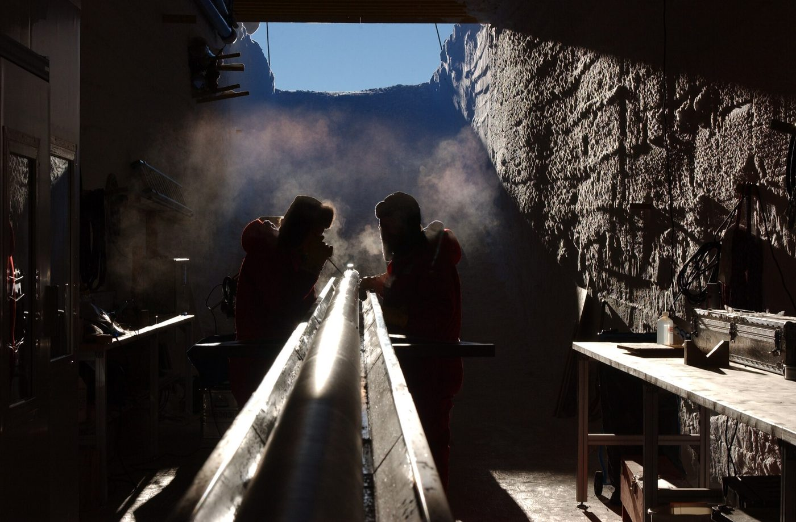

Issue 13 — Meltwater
Autumn 2025 · Percolation, refreezing, and what a melt layer does to a count

Drilling trench, mid-season. Photograph by Hannes Grobe, Alfred Wegener Institute for Polar and Marine Research · CC BY-SA 2.5
Feature · Timescales
At the top of a deep core the years are thick enough to see. For 577 metres the count is the clock — and then it stops being one.
Six pieces · 12,480 words
Layer counting gives the cleanest chronology anyone has, right up to the depth where it quietly stops working. What replaces it, and what that costs the age model.
The core was drilled in a single season by eleven people and a borrowed generator. Nine years later it underpins four separate chronologies, two of which disagree. A long account of what a single field season turns into.
Air is trapped tens of metres below the surface, so bubbles are always younger than the ice around them. The offset is well understood and routinely mis-stated.
A thin volcanic horizon 120 metres down is the only fixed point in the upper core that nobody argues about. It is doing more work than its thickness suggests.
Why deep cores come up in short lengths, and what the joins cost you downstream.
The depth axis was printed in metres and labelled in feet. The figure has been redrawn and the error is described in full.
Complete archive, 2019–